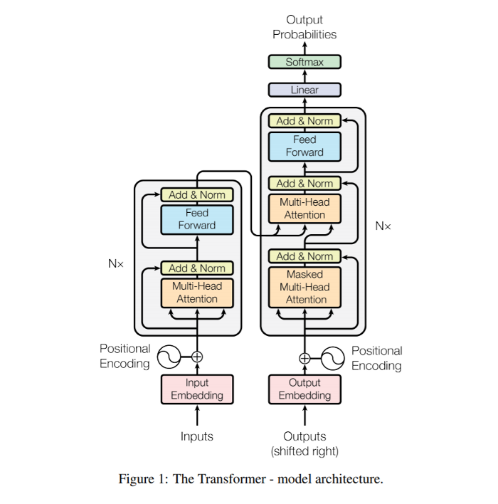

more than meets the eye?
Human language is composed of syntax and semantics. Syntax governs the structure of the language; it defines how to form 'correct' sentences out of words. Semantics giverns the meaning of the languge; it defines what a given sentence 'means', or how to 'interpret' the language's syntax.
Language is so fundamental to human experience that we rarely even think about it. There are more than 6,000 languages currently being used by humans to communicate with one another, and linguists have estimated that there have been over 30,000 human languages over our species' evolutionary history.
Although there are many 'computer languages' used by programmers to encode instuructions for computer execution, these languages are highly simplified and more closely related to mathematics than they are to natural human languages. Compared to computer 'languages', natural human languages are exceedingly complex. Training computers to 'understand' natural human language has been a long-standing goal of the artificial intelligence field.
The 'understanding' of human language by a computer is often called "natural language processing" or abbreviated "NLP". Modern-day NLP systems often aim to 'encode' the syntax and semantics of a given language into some 'high-dimensional' representation 'space' that can be more easily processed by a computer system like a neural network. One of the most common uses of such NLP systems is computer-based 'translation' among human languages. For example, if a computer could encode two languages into the same (or similar-enough) high-dimensional representational space, the computer should be able to provide reliable 'translation' between the languages.
From a data perspective, a 'sentence' in a given language is just a sequence of words. Understanding that a sentence is a sequence allows us to consider using any type of 'sequence model' to analyze natural human language. Conversely, because most NLP systems make use of a 'sequence model' of human language, we could use - perhaps with suitable modifications - existing NLP systems to analyze other types of sequences, besides just sentences from human languages.
Given the 'tight' connections between human language, sequence data and contemporary NLP systems, it may make sense to consider a very general approach that leverages advancements in natural language processing to analyze nearly any sequence data by 'projecting' it into a high-dimensional representational space that can be used to 'reason' about the 'syntax' and 'semantics' underlying the sequence data.
Under this 'NLP paradigm', we can 'encode' sequence data into a 'space' that somehow captures its syntax (ie, structure) and semantics (ie, meaning). Once so encoded, we can then train neural networks to perform specific inference tasks on encoded sequence data. In practice, we often train both the encoding and inference sub-networks as part of a larger system, so the encoding sub-network can 'learn' to produce encodings that are relevant to the specific inference problem. However, transfer learning is also often used for NLP problems. In these cases, encoding networks can be trained separately to provide very 'general' sequence encodings that can be used for a variety of inference tasks.
One of the state-of-the-art methods used to encode sequence data for neural network inference is called a "transformer". A transformer is a specific type of neural network architecture originally developed for natural language processing. But, as generalizable sequence models, transformers are potentially appropriate for a wide variety of sequence analysis problems.
Transformers were first introduced in a 2017 paper. The goal of the paper was to advance the 'state of the art' in human language translation, and the authors decided to call their approach a "transformer", I guess because it 'transforms' a sentence in one language into the corresponding sentence in another language.
Technically, the term "transformer" should be used to denote the overall 'architecture' of the system developed by the authors, which uses a variation of the encoder-decoder approach, combined with a 'novel' neural network layer called "multi-head attention". The overall architecuture is shown in the following figure from the paper:
In practice, the term "transformer" is often applied to denote the main 'building block' of the overall "transformer" neural-network architecure, which is shown in the gray block to the left in the above figure. The transformer 'building block' consists of a "multi-head attention" layer (shown in orange), followed by what the authors call a "feed forward" layer (shown in blue). The Feed-forward layer is really just a series of 2-3 densely-connected neural network layers applied directly to the sequence data, without first 'flattening' the sequences. The outcome of this is basically a series of very low-parameter linear transformations of the sequence data, in which the same exact transformation is applied to every element in the sequence. Of course, these transformations are separated from one another by nonlinear activations.
The primary 'innovation' associated with the "transformer" architecture is the multi-head attention layer, so sometimes the term "transformer" is used to denote any neural-network architecture that makes extensive use of multi-head attention layers. Just be aware that - as is the case with most of science - technical terms are not always used appropriately and correctly; this 'ambiguity' in language seems to be an artifact of human nature, and it can cause a great deal of confusion and present 'barriers' to understanding that can disproportionately impact members of minority groups. Of course, strict adherence to 'technical correctness' can also cause social-interaction problems. So it's probably best to develop a strong understanding of 'correct' technical vocabulary, but also make sure you have the skills to map words to associated meanings 'on the fly' and drawing on contextual information during social interactions. But I guess that's getting a bit off-topic.
The transformer approach is often discussed as a way to do something 'similar to' what is accomplished using LSTM neural-networks, but faster and more efficiently. There is certainly some benefit to thinking about transformers from this perspective. The "attention mechanism" implemented by the multi-head attention neural-network layer is an approach that can be used to directly incorporate long-range dependencies among items in sequence data, which is very similar to what an LSTM layer does. However, multi-head attention requires fewer trainable parameters, compared to LSTM, and multi-head attention layers were specifically designed to avoid the sequential processing required by LSTMs, so multi-head attention layers train much faster than LSTM layers on GPU hardware.
For these resaons, the 'transformer' paradigm utilizing multi-head attention has begun to largely replace LSTM-based models, and to some extent also the convolution-based models used for sequence and image analysis.
One of the main downsides of transformer-based methods - compared to LSTMs or convolutions - is that multi-head attention layers do not incorporate a model of sequence 'locality'. In contrast, both convolution and LSTM layers naturally include sequence locality information in the way the neural-network layers are constructed. Both LSTMs and convolutions incorporate information about which items in the sequence are 'close to' or 'far away from' a given sequence item. However, multi-head attention layers do not have any information about locality in the sequence; multi-head attention neurons apply exactly the same transformation to every item in the sequence, without taking into acount 'nearby' items in the sequence. This major drawback is usually 'fixed' by 'augmenting' the sequene data, itself, so the data analyzed by multi-head attention includes information in each sequence item's encoding that specifies its location within the larger sequence. This creates additional work for the data analyst, because we'll need to figure out how to encode location information in our input data before it is processed by the transformer.